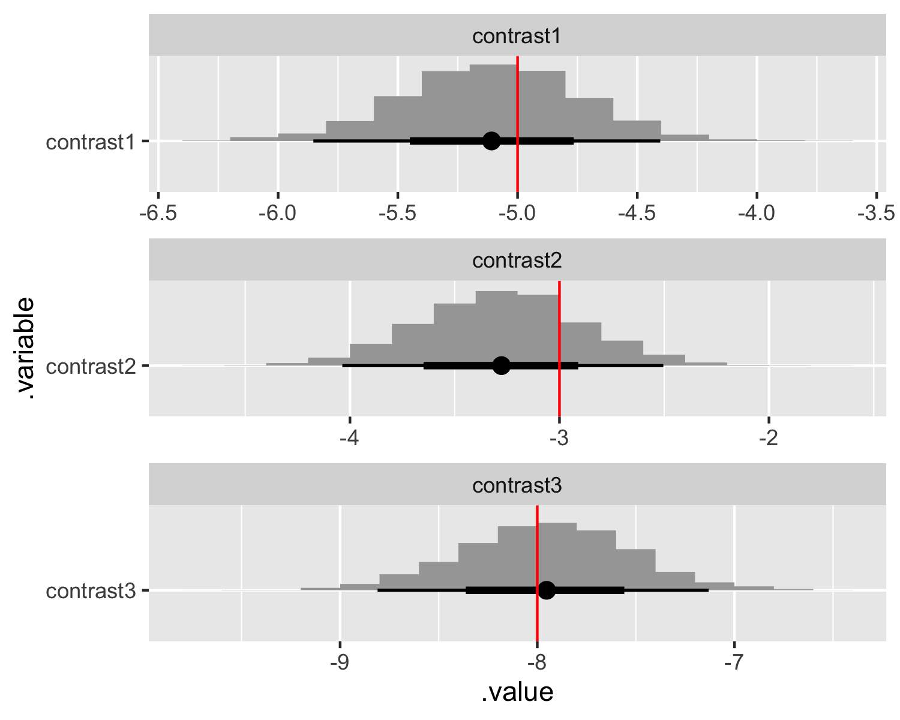

There are a number of ways to code discrete (i.e., categorical) variables, with different coding strategies better suited for specific use cases. Additionally, there are certain practices that are questionable, such as specifying a brand intercept (i.e., index coding the brand attribute) in a hierarchical multinomial logit model where an intercept isn’t identified. Finally, there is a question of using contrasts of marginal posteriors to answer hypotheses and how those contrasts are or are not impacted by the coding used.
Let’s start with a simple model and work up to choice models (where we can use what was detailed in the previous post on choice model parameterizations).
Generate data that follows index coding so its easy to extrapolate to other coding strategies.
// Index and parameter values.
data {
int<lower = 1> N; // Number of observations.
int<lower = 1> I; // Number of covariates.
matrix[N, I] X; // Matrix of covariates.
vector[I] beta; // Vector of slopes.
real<lower = 0> tau; // Variance of the regression.
}
// Generate data according to the simple regression.
generated quantities {
// Vector of observations.
vector[N] y;
// Generate data.
for (n in 1:N) {
y[n] = normal_rng(X[n,] * beta, tau);
}
}Call generate_flat_data from R.
# Load packages.
library(tidyverse)
library(cmdstanr)
library(posterior)
library(bayesplot)
library(tidybayes)
# Set the simulation seed.
set.seed(42)
# Specify data and parameter values.
sim_values <- list(
N = 50, # Number of observations.
I = 5, # Number of covariates.
J = c(2, 3), # Number of levels for each discrete variable.
beta = c(1, -4, 6, 3, -2), # Vector of slopes.
tau = 1 # Variance of the regression.
)
# Matrix of covariates.
sim_X <- matrix(data = 0, nrow = sim_values$N, ncol = (sim_values$I))
for (n in 1:sim_values$N) {
temp_X <- NULL
for (j in 1:length(sim_values$J)) {
temp_J <- rep(0, sim_values$J[j])
temp_J[sample(seq(1, (sim_values$J[j])), 1)] <- 1
temp_X <- c(temp_X, temp_J)
}
sim_X[n,] <- temp_X
}
sim_values$X <- sim_X
# Compile the model for generating data.
generate_flat_data <- cmdstan_model(
stan_file = here::here("content", "post", "discrete-coding", "Code", "generate_flat_data.stan"),
dir = here::here("content", "post", "discrete-coding", "Code", "Compiled")
)
# Generate data.
sim_data <- generate_flat_data$sample(
data = sim_values,
chains = 1,
iter_sampling = 1,
seed = 42,
fixed_param = TRUE
)
# Extract generated data.
sim_y <- sim_data$draws(variables = "y", format = "draws_list") %>%
pluck(1) %>%
flatten_dbl()Also known as indicator coding, dummy coding is likely the most common way to code discrete variables. Here we include an intercept and drop the first level of each of the discrete variables. Here’s a flat regression using dummy coding.
// Index value and observations.
data {
int<lower = 1> N; // Number of observations.
int<lower = 1> I; // Number of covariates.
vector[N] y; // Vector of observations.
matrix[N, I] X; // Matrix of covariates.
}
// Parameters.
parameters {
real alpha; // Intercept.
vector[I] beta; // Vector of slopes.
real<lower = 0> tau; // Variance of the regression.
}
// Regression.
model {
// Priors.
alpha ~ normal(0, 5);
for (i in 1:I) {
beta[i] ~ normal(0, 5);
}
tau ~ normal(0, 5);
// Likelihood.
for (n in 1:N) {
y[n] ~ normal(alpha + X[n,] * beta, tau);
}
}Let’s call flat_regression_dummy from R.
# Specify data.
data <- list(
N = length(sim_y), # Number of observations.
I = ncol(sim_X) - 2, # Number of covariates.
y = sim_y, # Vector of observations.
X = sim_X[, -c(1, 3)] # Matrix of covariates.
)
# Compile the model.
flat_regression_dummy <- cmdstan_model(
stan_file = here::here("content", "post", "discrete-coding", "Code", "flat_regression_dummy.stan"),
dir = here::here("content", "post", "discrete-coding", "Code", "Compiled")
)
# Fit the model.
fit_dummy <- flat_regression_dummy$sample(
data = data,
chains = 4,
parallel_chains = 4,
seed = 42
)We can’t recover the parameters values we used when simulating the data. Dummy coding is equivalent to specifying each included level as a contrast with the reference level. We can see that by computing contrasts and comparing it to the contrasted true parameter values.
# Extract draws and compare contrasts.
contrast_values <- tibble(
.variable = str_c("contrast", 1:(sim_values$I - length(sim_values$J))),
values = c(
# First discrete variable.
sim_values$beta[2] - sim_values$beta[1],
# Second discrete variable.
sim_values$beta[4] - sim_values$beta[3],
sim_values$beta[5] - sim_values$beta[3]
)
)
fit_dummy$draws(variables = "beta", format = "draws_df") %>%
mutate_variables(
contrast1 = `beta[1]`,
contrast2 = `beta[2]`,
contrast3 = `beta[3]`
) %>%
gather_draws(contrast1, contrast2, contrast3) %>%
ggplot(aes(y = .variable, x = .value)) +
stat_histinterval() +
geom_vline(aes(xintercept = values), contrast_values, color = "red") +
facet_wrap(~ .variable, scales = "free", ncol = 1)
For index coding we don’t include an intercept and don’t include any reference levels. By not including reference levels, the intercept is implied. Here’s a flat regression using index coding.
// Index value and observations.
data {
int<lower = 1> N; // Number of observations.
int<lower = 1> I; // Number of covariates.
vector[N] y; // Vector of observations.
matrix[N, I] X; // Matrix of covariates.
}
// Parameters.
parameters {
vector[I] beta; // Vector of slopes.
real<lower = 0> tau; // Variance of the regression.
}
// Regression.
model {
// Priors.
for (i in 1:I) {
beta[i] ~ normal(0, 5);
}
tau ~ normal(0, 5);
// Likelihood.
for (n in 1:N) {
y[n] ~ normal(X[n,] * beta, tau);
}
}And we call flat-regression-index from R.
# Specify data.
data <- list(
N = length(sim_y), # Number of observations.
I = ncol(sim_X), # Number of covariates.
y = sim_y, # Vector of observations.
X = sim_X # Matrix of covariates.
)
# Compile the model.
flat_regression_index <- cmdstan_model(
stan_file = here::here("content", "post", "discrete-coding", "Code", "flat_regression_index.stan"),
dir = here::here("content", "post", "discrete-coding", "Code", "Compiled")
)
# Fit the model.
fit_index <- flat_regression_index$sample(
data = data,
chains = 4,
parallel_chains = 4,
seed = 42
)With index coding, the parameter estimates don’t produce an implied contrast, so we’ll have to contrast them directly. Here we re-produce the same plot as before and compare it to the contrasted true parameter values.
# Extract draws and compare contrasts.
contrast_values <- tibble(
.variable = str_c("contrast", 1:(sim_values$I - length(sim_values$J))),
values = c(
# First discrete variable.
sim_values$beta[2] - sim_values$beta[1],
# Second discrete variable.
sim_values$beta[4] - sim_values$beta[3],
sim_values$beta[5] - sim_values$beta[3]
)
)
fit_index$draws(variables = c("beta"), format = "draws_df") %>%
mutate_variables(
contrast1 = `beta[2]` - `beta[1]`,
contrast2 = `beta[4]` - `beta[3]`,
contrast3 = `beta[5]` - `beta[3]`
) %>%
gather_draws(contrast1, contrast2, contrast3) %>%
ggplot(aes(y = .variable, x = .value)) +
stat_histinterval() +
geom_vline(aes(xintercept = values), contrast_values, color = "red") +
facet_wrap(~ .variable, scales = "free", ncol = 1)And the peculiar case of intercepts and brand intercepts…if intercepts aren’t identified, it could be the prior alone that is providing a sensible posterior. To test this, let’s use a uniform prior.
Marc is an assistant professor of marketing at the BYU Marriott School of Business. He graduated with an MSc from The London School of Economics and Political Science in 2009 and a PhD from The Ohio State University in 2016. His research interests include Bayesian inference, predictive modeling, consumer preference heterogeneity, and unstructured data. Marc teaches marketing analytics. You can find him on Twitter and GitHub.